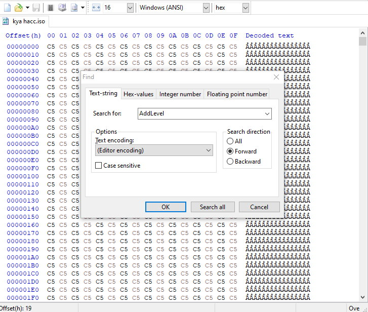
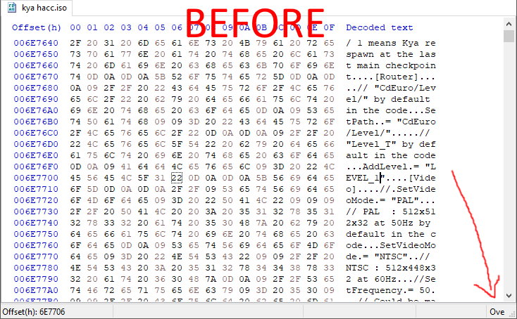
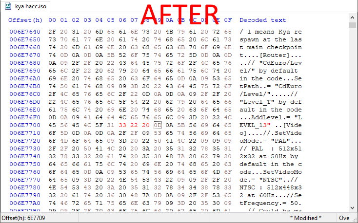

Accessing the secret KDL level
It's currently unknown if there's a way to access the secret KDL level (aka LEVEL_13) during normal gameplay. Here I explain three ways to do it anyway
How to - Cheat code method
Requirements for console:
Cheat Device for PS2 (recommended), Codebreakers or Action Replay MAX
PCSX2
- Download the correct cheat code for your game:
- Place it in the PCSX2 cheats directory
- If you're using the portable Windows version of PCSX2, it's <emulator directory>\cheats\
- If you have installed in on Windows, the default directory is Documents\PCSX2\cheats
- If you have installed in on Linux via the package manager, the default directory sould be ~/.config/PCSX2/cheats
- Open PCSX2, go to System > Enable Cheats, and start the game
- If it's the first time you use the emulator, you need to configure it for controls and to reduce lag. Google is your friend
- Select new game, then select an empty save file or a save file you don't care about; or go to the memory card manager and unplug the virtual memory card to start a game without creating a save
- After the first few lines of the intro dialog, you'll load into the secret level
- At this point I recommend you create a save state by pressing F1, which can be reloaded later by pressing F3, since it's possible that the game will autosave once you enter a different area. There are 10 save state slots which can be navigated with the F2 key
Console
- Download the correct cheat code for your game and cheat device:
- Use the cheat device to enter the cheat code, then launch the game
- Select new game, then select an empty save file or a save file you don't care about; or unplug the memory card to start the game without creating a save
- After the first few lines of the intro dialog, you'll load into the secret level
- At this point I recommend you unplug the memory card to avoid the game autosaving when going to a different area
How to - Hex editor method
Requirements: a hex editor (for Windows users, I recomment
HxD ), a DVD burner, and a KDL iso or bin/cue file (or a disc to create one)
For console: a modchip
PCSX2
- Create a copy of the KDL iso file
- If you have a bin/cue file, after creating a copy you may also need to open the cue file with a text editor and change the filename on the first line to match the newly created file
- Open the copy you just created with your hex editor of choice
- Open the string search function (on HxD, press Ctrl+F), and search for AddLevel

- Place the cursor right after the 1 of LEVEL_1, and making sure the hex editor is set to overwrite text mode (HxD should be in that by default, otherwise press Ins), type 3", followed by a space


- Save the file. If you're using HxD and it starts to make a backup, you can cancel it since you've already made a copy
- Open PCSX2, select the modified iso, and start the emulator
- If it's the first time you use the emulator, you need to configure it for controls and to reduce lag. Google is your friend
- When the game loads, select New Game, select a file that's empty, or that you don't care about, and start a new game like normal
- After the first few lines of the intro dialog, you'll load into the secret level
- At this point I recommend you create a save state by pressing F1, which can be reloaded later by pressing F3, since it's possible that the game will autosave once you enter a different area. There are 10 save state slots which can be navigated with the F2 key
Console
Create a modified ISO following the instructions above, then burn it on a blank DVD-R.
Once you load the level, I recommend you unplug the memory card to avoid the game autosaving when going to a different area.
How to - Save file method
Requirements: the
NTSC save file or the
PAL save file
For PCSX2:
MyMC (for Linux users, I haven't tried if it works with Wine)
For console: homebrew access (FMCB, modchip, HDDOSD, exploit, whatever),
wLaunchElf, and a USB stick supported by wLaunchElf
PCSX2
- Open MyMC
- Select the Mcd001.ps2 PCSX2 memory card file
- You need to launch the emulator at least once to create the file
- If you're using the portable Windows version of PCSX2, it's in <emulator directory>\memcards\
- If you have installed in on Windows, the default directory is Documents\PCSX2\memcards
- If you have installed in on Linux, the default directory sould be ~/.config/PCSX2/memcards
- If you have KDL save files you don't want to lose in any save slot, create a backup of Mcd001.ps2
- If you already have a save file for KDL, highlight it, then go to File > Delete
- Go to File > Import
- Import the file you downloaded
- Close MyMC
- Open PCSX2, select the game iso, and start the game as normal
- If it's the first time you use the emulator, you need to configure it for controls and to reduce lag. Google is your friend
- When the game loads, select Load Game, and load the save file, and you'll load into the secret level
Note that the game is set to 16:9. You can set PCSX2 to 16:9 by going to Config > Emulation Settings > GS Window
- At this point I recommend you create a save state by pressing F1, which can be reloaded later by pressing F3, since it's possible that the game will autosave once you enter a different area. There are 10 save state slots which can be navigated with the F2 key
Console
- Copy the save file to the USB stick
- Open wLaunchElf
- Go to mass:, highlight the save file, press R1, and select copy. Then go to mc0:/mc1:, press R1, and select psuPaste
- If you have KDL saves you don't want to lose in any save slot, create a backup of the KDL save file from wLE or from the PS2 Browser
- Start the game
- When the game loads, select Load Game, and load the save file, and you'll load into the secret level
Note that the game is set to 16:9. You can set PCSX2 to 16:9 by going to Config > Emulation Settings > GS Window
- At this point I recommend you unplug the memory card to avoid the game autosaving when going to a different area
Bypassing the teleport in the maze game
When going to the maze game, there's a teleport that's normally inevitable that I assume is supposed to take you to the maze and set your magika limit to 100, but doesn't work properly. Here I explain how to skip it
If you used the cheat code method to access the secret level in the first place, you don't need to redownload the cheat file
PCSX2
- Download the cheat file corresponding to your game from the first section
- Place it in the PCSX2 cheats directory
- If you're using the portable Windows version of PCSX2, it's <emulator directory>\cheats\
- If you have installed in on Windows, the default directory is Documents\PCSX2\cheats
- If you have installed in on Linux via the package manager, the default directory sould be ~/.config/PCSX2/cheats
- On PCSX2, go to System > Enable Cheats
- When you're in the level, first take the elevator to the Kya Maze, then, without activating the glitched teleport, press Triangle + Circle + Left to teleport inside the maze
- The magika counter will remain frozen to "0/50" even if you start collecting orbs, but in the background it is indeed set to a maximum of 100 and it does count up
- Note that the warps inside the maze are still broken, so avoid them
Console
This requires a cheat device on console
- Download the cheat file corresponding to your game and cheat device from the first section
- Use the cheat device to enter the cheat code
- When you're in the level, first take the elevator to the Kya Maze, then, without activating the glitched teleport, press Triangle + Circle + Left to teleport inside the maze
- The magika counter will remain frozen to "0/50" even if you start collecting orbs, but in the background it is indeed set to a maximum of 100 and it does count up
- Note that the warps inside the maze are still broken, so avoid them
Special thanks to Snugggles from the Kya DL Speedrunning Discord, for teaching me stuff about pointers and finding variables with CE